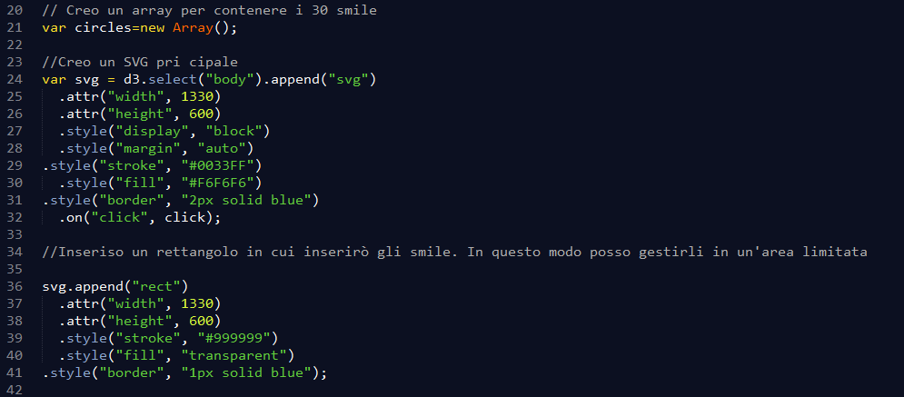
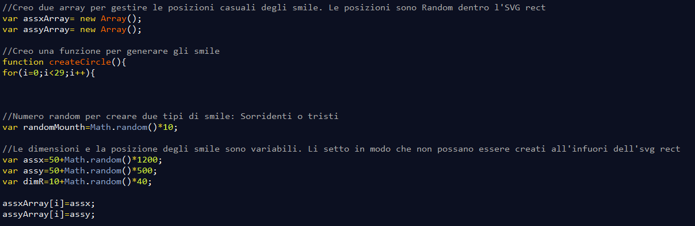
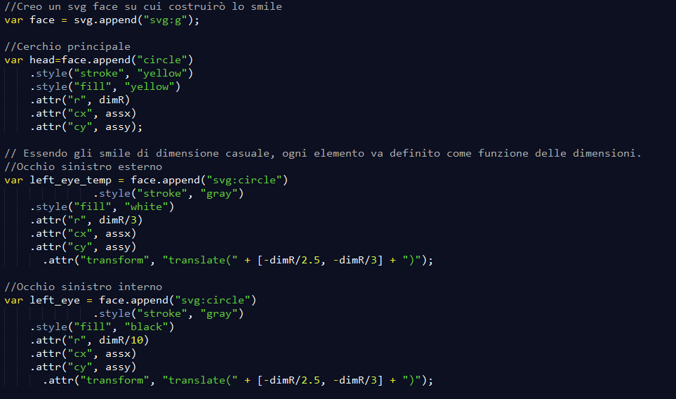
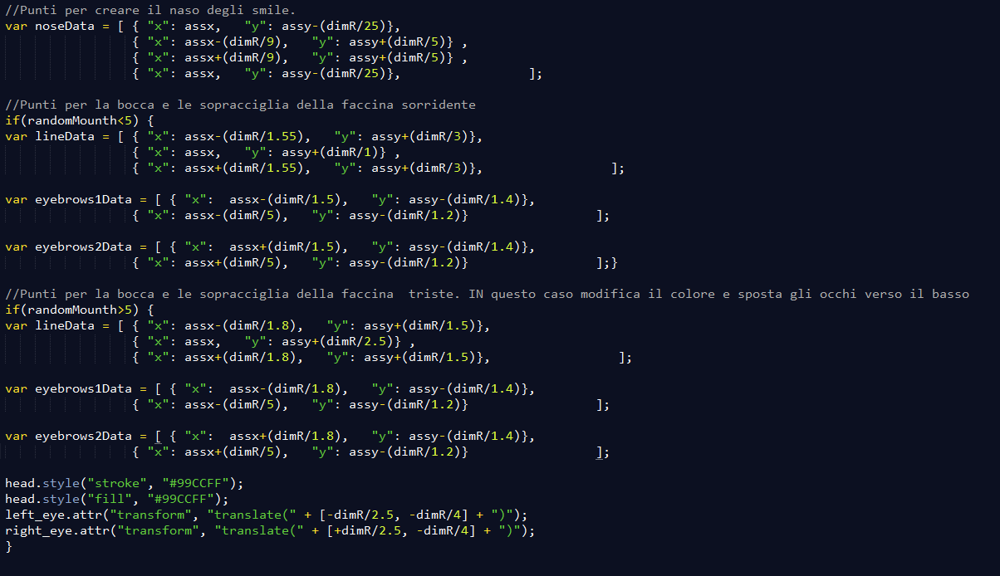
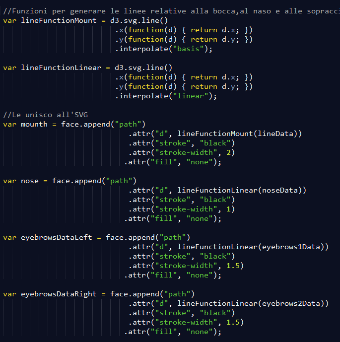
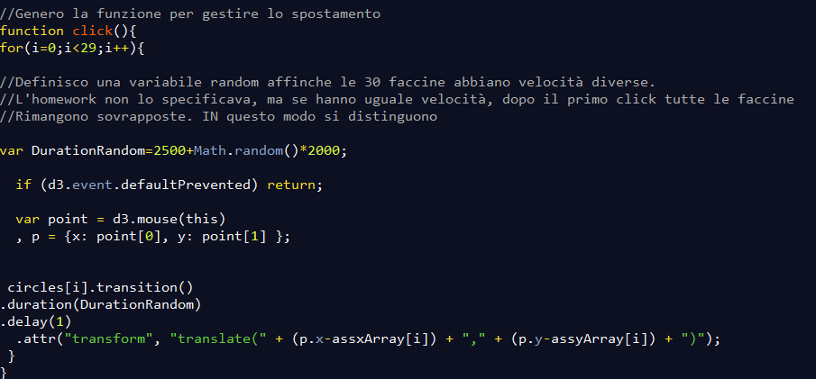
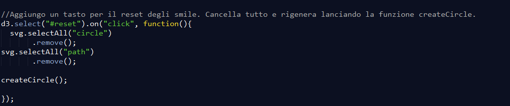

Per prima cosa creo un SVG principale e un rettangolo in modo da limitare i movimenti degli smile.
Ho deciso di gestire posizione e dimensione degli smile in maniera random. Salvo le posizioni in 2 array in quanto mi serviranno successivamente per il movimento verso il click del puntatore del mouse. La posizione x,y random degli smile è settata in modo che non possano uscire dall'svg rect.
Creo un SVG principale che userò per raggruppare tutti gli elementi dello smile. Essendo tutti gli smile in posizione random, la posizione dei vari elementi all'interno degli smile vanno definite come funzione del raggio.Costruisco successivamente il cerchio principale e gli occhi. Per gli occhi creo un cerchio esterno e uno interno.
Per il naso costruisco un piccolo triangolo utilizzando 4 punti, in cui l'ultimo punto coincide con il primo. Ho deciso di fare smile sia sorridenti che tristi, il cui numero è gestito in maniera casuale tramite la variabile randomMounth. In caso di smile tristi, gli occhi interni vengono spostati verso il basso e viene cambiato il colore di default. Creo inoltre le sopraccigliam utilizzando linee diverse a seconda del tipo di smile.
Creo due funzioni per generare le linee relative al naso e alla bocca. Successivamente le unisco , insieme alle sopracciglia,all'svg principale
Metto tutto dentro una funzione createCircle che crea 30 cerchi tramite un ciclo for e li aggiunge ad un array, in modo da poter essere richiamati facilmente per lo spostamento

Definisco una funzione click() per lo spostamento degli smile nell'ultimo punto in cui l'utente ha cliccato. Ho gestito in maniera Random le velocità di spostamento, altrimenti per i click successivi al primo tutti gli smile risultano sovrapposti.
Aggiungo un'ultima funzione reset associata ad un pulsante. Permette un refresh rapido dell'svg principale senza bisogno di aggiornare ogni volta la pagina
